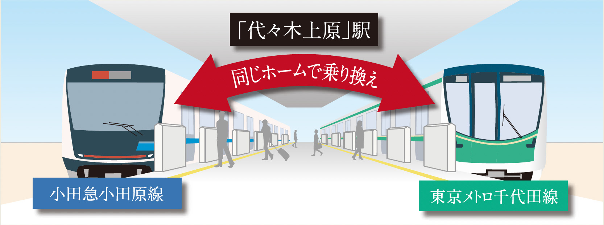
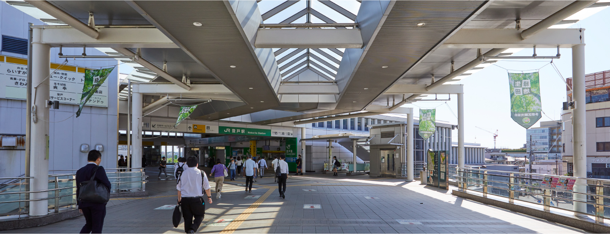
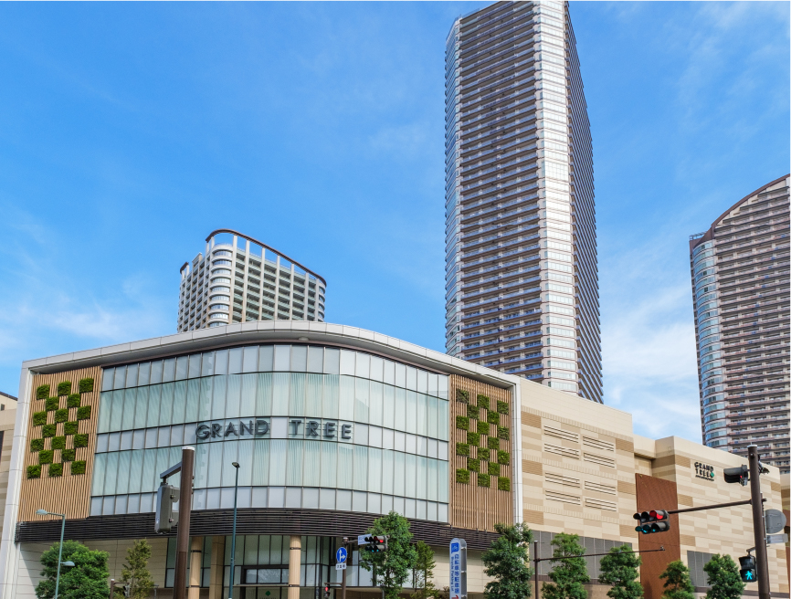
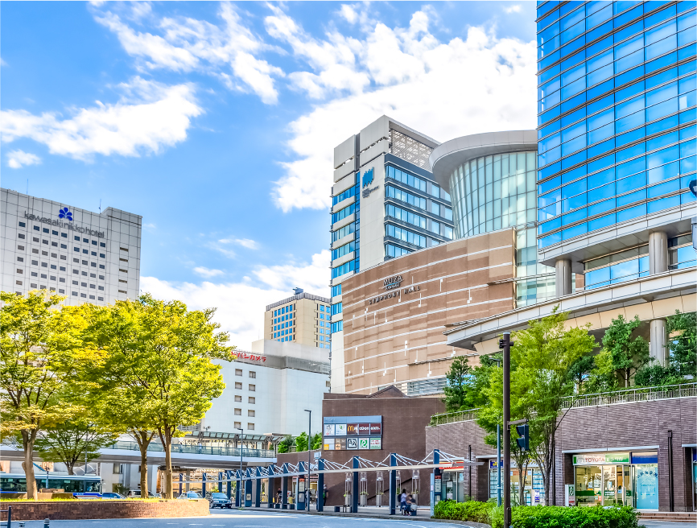

image photo
ACCESS
快速急行停車駅がかなえる快足フットワーク。
MULTI ACCESS
都心近接&2路線※1利用で通勤通学に便利。
快速急行が停車する小田急線「登戸」駅からは都心へのアクセスもスピーディ。「新宿」駅へ3駅直通20分※2、「大手町」駅へは東京メトロ千代田線へ乗り換えて34分※3。毎日の通勤通学もスムーズです。また、JR南武線利用で武蔵小杉、川崎方面へのアクセスも軽快です。

徒歩11分の小田急小田原線・JR南武線「登戸」駅より
-
- 「下北沢」駅
- 直通9分（8分）
小田急小田原線快速急行利用
- 「表参道」駅
- 19分（18分）
小田急小田原線快速急行利用、
「代々木上原」駅で東京メトロ千代田線に乗り換え- 「渋谷」駅
- 22分（19分）
小田急小田原線快速急行利用、
「下北沢」駅で京王井の頭線（平常時は急行）に乗り換え- 「霞ヶ関」駅
- 28分（26分）
小田急小田原線快速急行利用、
「代々木上原」駅で東京メトロ千代田線に乗り換え- 「品川」駅
- 35分（33分）
JR南武線（平常時はJR南武線快速）利用、「武蔵小杉」駅でJR横須賀線に乗り換え
- 「代々木上原」駅
- 直通12分（11分）
小田急小田原線快速急行利用
- 「新宿」駅
- 直通20分（17分）
小田急小田原線快速急行利用
- 「赤坂」駅
- 24分（23分）
小田急小田原線快速急行利用、
「代々木上原」駅で東京メトロ千代田線に乗り換え- 「大手町」駅
- 34分（32分）
小田急小田原線快速急行利用、
「代々木上原」駅で東京メトロ千代田線に乗り換え- 「東京」駅
- 36分（36分）
小田急小田原線快速急行利用、「代々木上原」駅で東京メトロ千代田線に乗り換え、「国会議事堂前」駅で東京メトロ丸ノ内線に乗り換え
ODAKYU LINE
平日午前7時台・8時台は1時間に10本が運行。快速急行停車駅のアドバンテージ。-
7時台、8時台の上り電車は、混雑率の緩和効果を高めるため、それぞれ10本の快速急行が運行しています。「登戸」駅は快速急行停車駅で、「新宿」駅へ3駅直通20分と軽快なアクセスを実現します。特に慌ただしい通勤時にはこのアドバンテージが、目的地へのより快適でスピーディな移動をかなえてくれます。
-

出典：小田急小田原線ホームページ
CHIYODA LINE
東京メトロ千代田線の利用で東京の中枢へ。-
東京メトロ千代田線への乗り入れで都心主要駅へダイレクトアクセス。主要路線の接続もスムーズです。東京メトロ千代田線へは直通となる通勤準急や各駅停車の利用のほか、快速急行利用で「代々木上原」駅まで行き、千代田線へ乗り換えることも可能。この小田急線上り電車と千代田線は同じホームなので乗り換えも軽快です。
-

出典：小田急小田原線ホームページ
-

「代々木上原」駅ホームイメージイラスト
-

出典：東京メトロ千代田線ホームページ
NAMBU LINE
始発電車利用で川崎、横浜方面へもラクラク。武蔵小杉、川崎などのビジネスエリアをダイレクトに結ぶJR南武線。「武蔵小杉」駅で乗り換えることで、横浜や品川方面へのアクセスもスムーズです。
-

出典：JR南武線ホームページ
-

JR南武線「登戸」駅（約880m／徒歩11分）
-
武蔵小杉
18分（13分）image photo
 -
川 崎
31分（21分）image photo
 -
横 浜
38分（35分）image photo
JR南武線「登戸」駅より
-
- 「武蔵小杉」駅
- 直通18分（13分）
JR南武線（平常時は快速）利用
-
- 「川崎」駅
- 直通31分（21分）
JR南武線（平常時は快速）利用
-
- 「横浜」駅
- 38分（35分）
JR南武線（平常時は快速）利用、「武蔵小杉」駅で
JR横須賀線（平常時はJR湘南新宿ライン）に乗り換え
ODAKYU ROMANCECAR
「新百合ヶ丘」駅からロマンスカー利用で観光スポットへ。小田急小田原線「登戸」駅より
-
- 「片瀬江ノ島」駅
- 52〜57分
image photo
小田急小田原線利用、「新百合ケ丘」駅でえのしま1号に乗り換え
-
- 「小田原」駅
- 61〜66分
image photo
小田急小田原線利用、「新百合ケ丘」駅でさがみ61号に乗り換え
-
- 「箱根湯本」駅
- 83〜85分
image photo
小田急小田原線利用、「新百合ケ丘」駅ではこね51号に乗り換え

image photo
「東名川崎」ICからのハイウェイ利用で空港へ、都市へ。
「東名川崎」ICへは約5.8kmの距離。羽田空港や横浜・みなとみらいほか休日のレジャースポットへのドライブも気軽に、軽快に楽しめます。
-
みなとみらい
（「みなとみらい」出入口）
約22分（約22.2km）
image photo
-
お台場
（「台場」出入口）
約28分（約27.0km）
image photo
-
羽田空港
（「空港中央」出入口）
約28分（約31.3km）

image photo
-
東京ディズニーリゾート®方面
（「葛西」出入口）
約32分（約36.1km）
image photo
※1.2路線とは小田急小田原線、JR南武線のことです。
※2.現地より徒歩11分の「登戸」駅より小田急小田原線快速急行利用、直通20分（17分）。
※3.現地より徒歩11分の「登戸」駅より小田急小田原線快速急行利用、「代々木上原」駅で東京メトロ千代田線に乗り換え、34分（32分）。
※掲載の電車所要時間は待ち時間・乗り換え時間を含んだ通勤時（カッコ内は平常時）の目安であり、時間帯により多少異なります。
※掲載の路線図は、一部路線・駅等を抜粋して表記しています。
※「代々木上原」駅ホームイメージイラストはイメージであり、実際とは異なります。
※距離表示については地図上の概測距離を、徒歩分数表示については80ｍを1分として算出し、端数を切り上げたものです。
※掲載の環境写真は2023年6月に撮影。
※掲載の距離表示については地図上の概測距離を、高速道路は「ドラぷら（NEXCO東日本）」ホームページにて検索（2023年6月現在）したものです。但し、天候不順、周辺の交通状況（朝・夕の混雑、交通事故等）等により大幅な遅延が生じる場合があります。